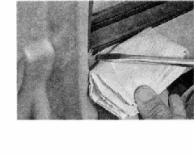

Стекло - снятие и установкаСнятие 1. Снимаем обивку двери. 2. Отвернув четыре болта, отсоединяем стекло от стеклоподъемника . Смещаем стекло вниз до упора. 3. Шлицевой отверткой поддеваем и снимаем внутренний уплотнитель стекла.  5. Извлекаем стекло из двери вместе с защитной пленкой. Установка Устанавливаем стекло в обратной последовательности, заменив поврежденные уплотнители. |